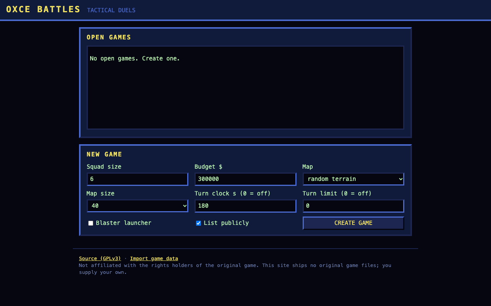
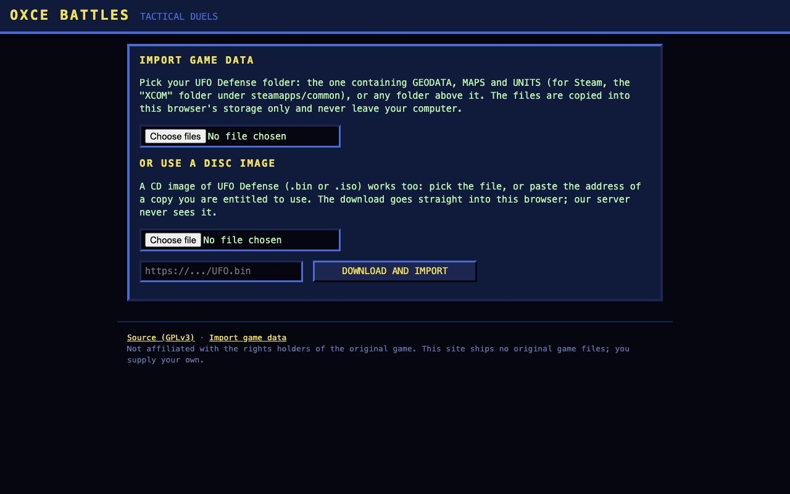

OXCE Battles
Completion ▰▰▰▰▰▰▰▰▱▱ 80% · live and working; psi, tanks, polish missing
OXCE Battles takes the battlescape of OpenXcom Extended and turns it into a two-player duel in the browser. Each player buys a squad with a money budget on the original equipment screens, and then the two squads fight one tactical battle in alternating turns. No campaign, no accounts, no ladder.
The engine is upstream OXCE compiled to WebAssembly with Emscripten, plus a thin patch of mine. Both browsers run the full simulation in deterministic lockstep; a small Go server on my machine hosts the lobby and relays the actions and one RNG seed per action.
Important: the site ships no original game files. To play you need your own copy of the original UFO Defense data. You import it once in the browser (a game folder, or a .bin/.iso disc image), it stays in the browser's storage and never reaches the server. Without that data there is nothing to play.
Features
- Lobby with invite links and an optional public list of open games (settings only, no chat)
- Match settings: squad size 1–8, money budget (default $300,000), random terrain or Skyranger vs landed UFO, map size 30/40/50, turn clock, turn limit, optional blaster launcher
- Squad setup with prices from a small arena ruleset mod (
arena/mod/); identical soldiers with fixed stats on both sides - Deterministic lockstep: every action is a serialised command, with a bucketed state hash after each one
- Desync handling: a downloadable desync report, then a resync by save transfer
- Per-faction fog of war inside one shared state, so each side only sees what its soldiers see
- Disconnect handling: the battle pauses, rejoin by state transfer, and after 180 s the other player may claim the win
- Endings by elimination, surrender or turn-limit draw
- Game data import from a folder or a CD image; the ISO 9660 image is parsed in the browser
Under the hood
Only my part is counted; the OXCE engine underneath is thousands of upstream commits by other people. Engine hooks outside src/Arena/ are marked // arena.
Browsers and native builds don't agree on libm, so during a match all trigonometry goes through my own functions, down to IEEE signed zeros. From src/Arena/Arena.cpp:
bool ny = std::signbit(y); // signed zeros as IEEE atan2: atan2(+-0, -0) = +-pi
if (y == 0) return std::signbit(x) ? (ny ? -pi : pi) : y;
...
double sin(double x) { return active() ? dSin(x) : std::sin(x); }Game data hashes are taken per file and sorted, because, as the comment in src/Arena/Net.cpp says, "the ruleset order is directory-listing order, which differs between file systems".
Engine options that affect the simulation (instant grenades, strafe, reaction fire threshold and so on) are pinned while a match runs, and Options::save swaps the user's own values back in so the pinned ones never land in options.cfg.
The spec in arena/SPEC.md opens with a table of decisions marked "settled, do not re-litigate", including: "A modified client can see through fog (it holds the full state). Accepted."
Ideas & inspirations
The base is OpenXcom Extended, a fan engine for the 1994 UFO Defense. The spec names an existing OXCE Coop mod as "a reference for hook points only". The item price table for weapons without a buy price is my own guess and says so: "Prices are guesses and are meant to be tuned by playtest."
Explicitly left out of v0 in the spec: chat, spectators, replays, ladder, matchmaking, mobile, TFTD. Psi-amps and tanks are listed as post-v0 because they need engine work.
Where it started, where it ended
It started as arena/SPEC.md and a native build script, with the goal written in the handover notes: the PvP site working and reachable at ruzzoli.de/oxce-battles/. The work was split into packages (relay server, lockstep command layer, fog, squad setup, web port, site, net session, gameplay) that I ran in parallel with AI coding agents on separate branches and merged.
It ended where it was meant to: deployed, with a two-browser match passing on the production server. Later in the same day came the disc-image import, menu trimming (a title card instead of the main menu) and a round of fixes for desyncs and UI.
State of the repo
All 74 commits are from 1 October 2026; the last one says the live server is "live and verified". The handover file tracks a numbered open-issues list, all ticked, each with a commit or a reason. Test gates exist: a five-seed determinism test, a net test (both maps, desync, rejoin, surrender), Go tests, UI scripts and headless browser tests.
Honest caveats from the notes: one WASM-vs-native terrain desync after shots was traced to libm differences and then fixed with the trig replacement above, and some paths were only checked by bots, not by human clicks. Psi and tanks are missing. Against its own v0 goal it is most of the way; I'd say 80%.
Is it a real game?
Playable. A match has a real win and lose state (elimination or surrender) and an optional draw. But it is one battle, not a campaign, and it needs two people, and both need their own copy of the original game data. Once you have that, it is as replayable as two people want it to be.
History
- 2026-10-01 Spec, native build script and the Go relay server with lobby pages
- 2026-10-01 Lockstep command layer, per-faction fog, squad setup with budget, web build via Emscripten
- 2026-10-01 Site: room page boots the game, import and source pages; first deploy live
- 2026-10-01 Network session finished, resync fixed; gameplay fairness fixes
- 2026-10-01 Game data import from a CD image (file or URL)
- 2026-10-01 Arena menus with a title card; same floating point natively and in WASM
- 2026-10-01 Merged fixes deployed, live and verified
Screenshots



Latest updates
- 2026-10-01 Both-seats-gone restore accepted; live and verified
- 2026-10-01 Clearer reject texts, no overlay after the match
- 2026-10-01 atan2 keeps IEEE signed zeros
- 2026-10-01 Pixel-sharp canvas
- 2026-10-01 Import game data from a CD image
- 2026-10-01 First commit: spec and native build script